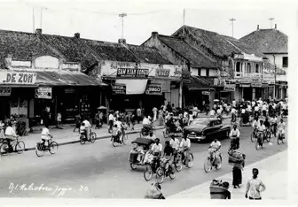
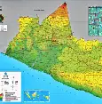
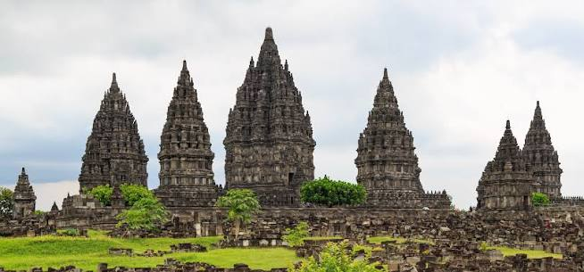
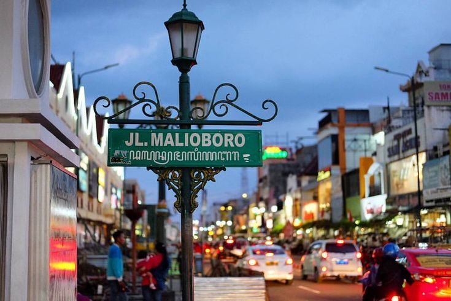

Sejarah

Yogyakarta memiliki sejarah panjang yang berkaitan erat dengan perkembangan kerajaan-kerajaan Jawa.
Kesultanan Yogyakarta berdiri pada 1755 setelah Perjanjian Giyanti, yang membagi wilayah Kesultanan
Mataram menjadi dua bagian. Pangeran Mangkubumi kemudian menjadi Sultan Hamengku Buwono I dan mendirikan
Kesultanan Yogyakarta.
Geografis

Yogyakarta terletak di bagian selatan Pulau Jawa dan merupakan ibu kota Daerah Istimewa Yogyakarta.
Wilayah Yogyakarta memiliki kondisi geografis yang beragam, mulai dari dataran rendah hingga daerah perbukitan.
Di sebelah utara terdapat Gunung Merapi, sedangkan di bagian selatan berbatasan dengan Samudra Hindia. Yogyakarta
juga memiliki beberapa sungai, seperti Sungai Code, Sungai Gajah Wong, dan Sungai Winongo. Wilayah ini beriklim tropis
dengan dua musim, yaitu musim hujan dan musim kemarau. Kondisi geografis tersebut membuat Yogyakarta memiliki tanah yang
subur serta pemandangan alam yang beragam.
Selain itu, kondisi geografis Yogyakarta yang beragam membuat wilayah ini memiliki berbagai potensi alam
dan menjadi salah satu daerah tujuan wisata di Indonesia.
Wisata
Yogyakarta memiliki banyak destinasi wisata menarik, mulai dari wisata sejarah, budaya, alam, hingga kuliner.
Beberapa tempat yang terkenal antara lain Candi Prambanan, Malioboro, Keraton Yogyakarta, Pantai Parangtritis,
dan kawasan Gunung Merapi. Keberagaman wisata tersebut membuat Yogyakarta menjadi salah satu tujuan wisata
populer di Indonesia.
Candi Perambanan

Candi Prambanan merupakan salah satu candi Hindu terbesar di Indonesia yang terkenal dengan bangunan yang megah
dan nilai sejarahnya. Candi ini menjadi salah satu destinasi wisata populer di Yogyakarta
Malioboro

Malioboro adalah kawasan wisata yang terkenal sebagai pusat keramaian Kota Yogyakarta.
Di sini, wisatawan dapat menikmati suasana kota, berbelanja oleh-oleh, serta mencoba
berbagai kuliner khas Yogyakarta.